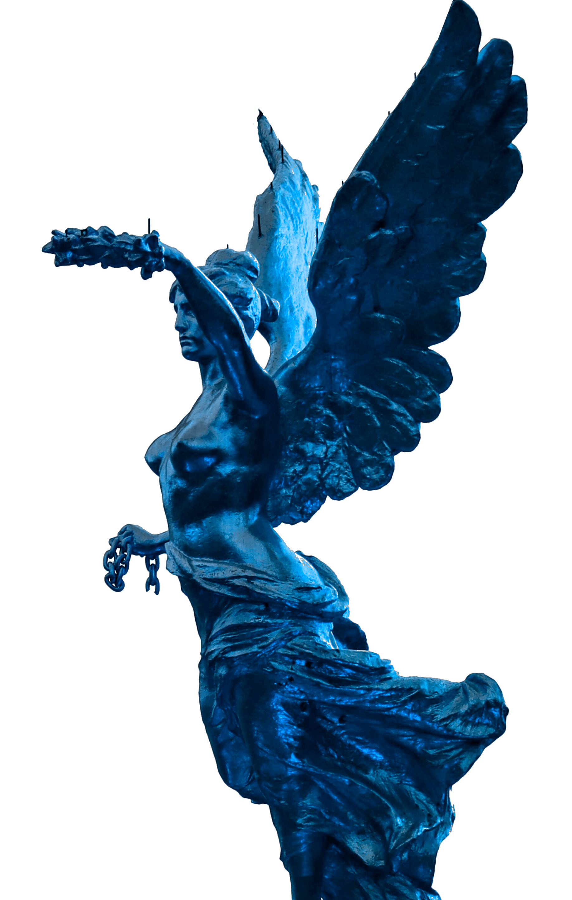

Bienvenidos/as a los Premios GOAT
El cine tiene los Oscars, la música tiene los Grammy y los videojuegos tienen los GOAT.
Los premios que celebran la calidad, tanto creativa como técnica hacia la industria de videojuegos.
Gente unida de todas las partes del mundo
con un mismo propósito,
el recordar y revivir algunos de los mejores videojuegos de todos los tiempos.
No te pierdas la Edición de los Premios GOAT, el 9 de Diciembre de 2023, en el Microsoft Theatre de los Ángeles
a las 17:00 h (UTC) o en nuestro canal de Twitch thegameawards.
Los premios GOAT se hacen en los Ángeles
Como hemos
mencionado antes, los premios se realizarán en el auditorio de California, Los Ángeles,
uno de los escenarios interiores más grande de todo Estados Unidos, con una capacidad de 7100 personas.
9 de Diciembre de 2023, a partir de las 17:00 h (UTC).
Microsoft Theatre, Los Ángeles. Compra tu entrada:

Nuevos premios, nuevas sorpresas
Estos premios llegan repletos de novedades para hacer que el evento sea inolvidable.
Muchas categorías, muchos invitados,
la posibilidad de asistir presencialmente a la gala,
un jurado de lujo… Y muchas más sorpresas
que podréis ir descubriendo en nuestras redes sociales.
Síguenos para no perderte nada.